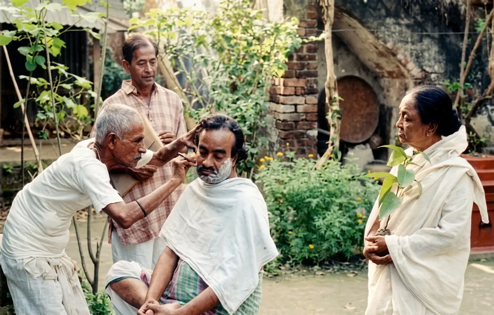
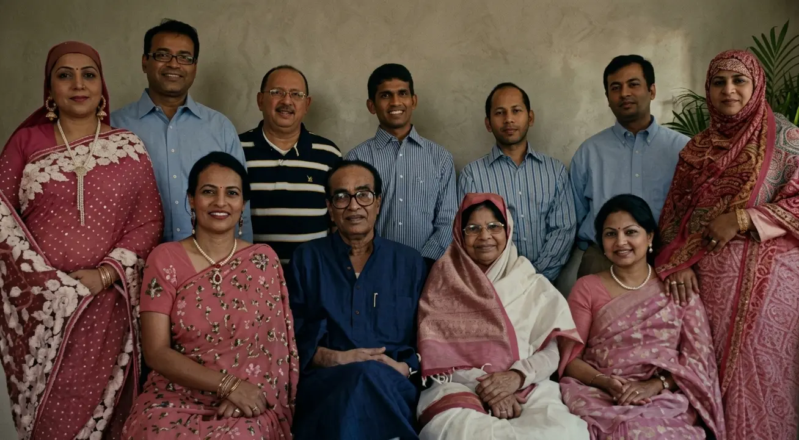
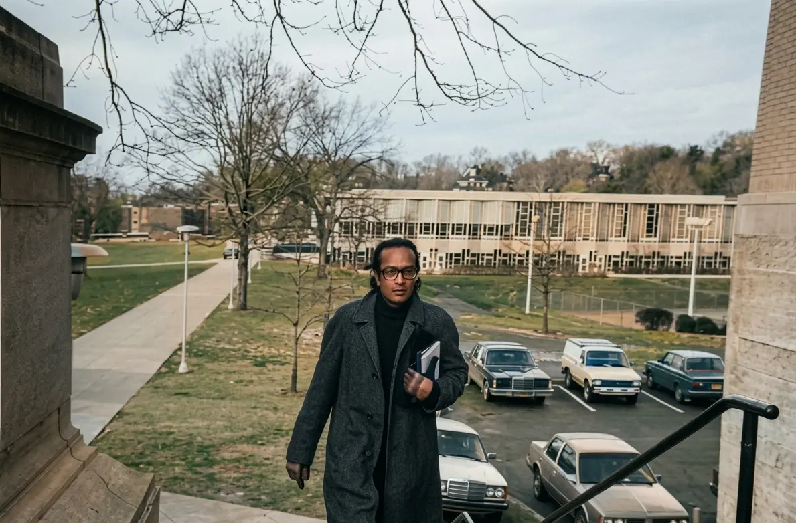
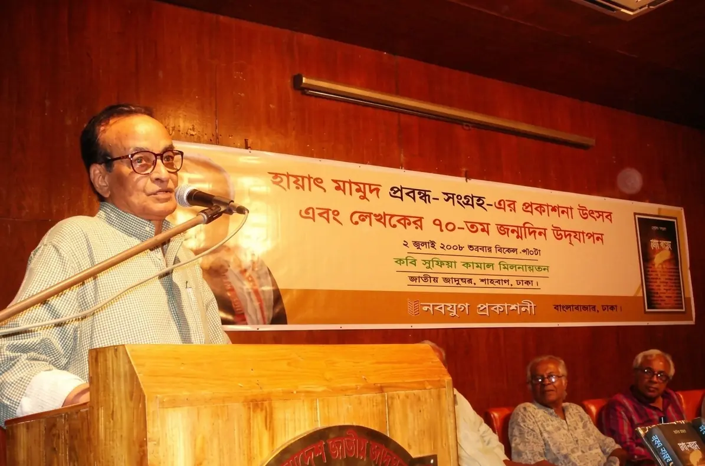
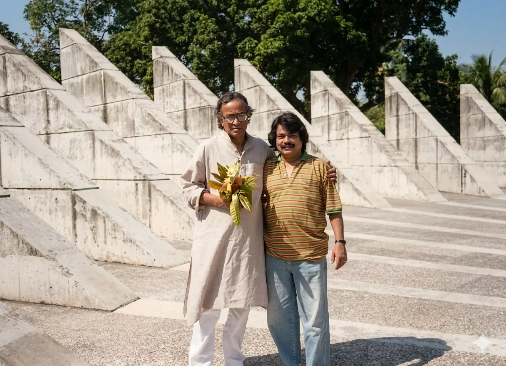
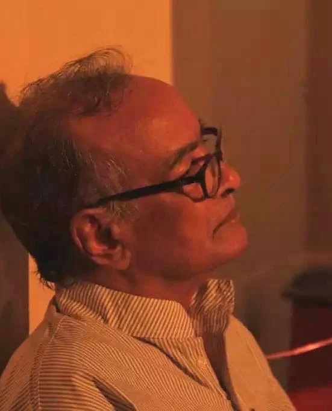

A visionary in Bengali literature whose profound works echoed the soul of a nation. His legacy remains an eternal flame in our cultural heritage.
Professor Momtazuddin Ahmed was born in the village of Aiho, West Bengal, on December 17, 1933, though official records later adjusted his birth date to January 18, 1935, to align with school completion age requirements. Originally named Tamizuddin Miah, he was renamed Momtazuddin by his father following the advice of a local scholar, though he remained affectionately known as Manjur within his family.
His early education was rooted in the warmth of his household; he was introduced to poetry by his elder sister at age four and guarded by his grandmother’s deep affection, which often shielded him from the strict discipline his father intended. This blend of formal instruction and familial indulgence shaped the foundational years of the renowned scholar.
Momtazuddin Ahmed’s early academic journey was marked by both disciplined excellence and the shifting tides of history. After ranking first in his admission test to the prestigious Malda District School, he spent his formative years under the strict guidance of his uncle and the mentorship of influential teachers like Charuchandra Chattopadhyay. Though he initially excelled as a top-ranked student, his later years at the school saw a burgeoning interest in cinema and a move to a more relaxed living environment at his aunt’s house. This period of his life was ultimately disrupted by the Partition, which forced his relocation to Bholahat. Despite the upheaval of being expelled from his hostel and changing schools just months before his matriculation, he successfully completed his exams at Rameshwar Secondary School—an achievement that, while falling short of his own high academic expectations, remained a source of great pride for his family and a milestone in his village.
A visual archive of a legendary journey. Click on any image to see the magic






"When the son rushed into the ICU, fresh off the flight, his eyes searched for the familiar sight—Momtazuddin Ahmed, the legendary dramatist, who would always greet him with a radiant spark in his gaze, a smile like a child’s secret, and a flurry of kisses pressed to his palm. "Abba, I’m here," the son would whisper, and his father’s face would crinkle with triumph, as if his son’s arrival alone could defy mortality. But not this time. Momtazuddin lay motionless, a muted echo of his vibrant self. His eyes, though open, held no light; his voice, a dry rustle. "Ba… ba… you came," he managed, and the son’s heart fractured. He clasped his father’s hand—those slender, ink-stained fingers that had scripted a thousand stories—now limp and cool. Around them, the ICU buzzed with hushed urgency: a cousin reciting Surah Yasin, another trickling Zamzam water onto cracked lips, the rhythmic beep of the monitor counting down. The son, a doctor himself, watched the numbers plummet. MAP: 47. Pulse: 42. A statistician of grief. He pressed his forehead to his father’s feet, staining the sheets with tears. "Forgive me, Abba." No answer. Only the shudder of a final breath at 3:48 PM, and the cruel green line that followed. In the silence, he kissed Momtazuddin’s palm one last time—the hand that had penned revolutions, now stilled. A sob caught in his throat, but then, a thought: somewhere beyond the sterile white, his father was already composing a new drama, his words unfurling like dawn over an unseen stage. "Bon voyage, Abba," he murmured. "Your next act begins.""